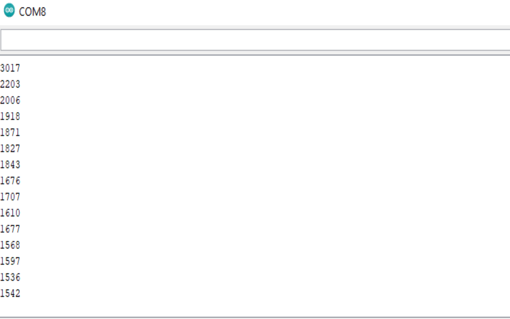
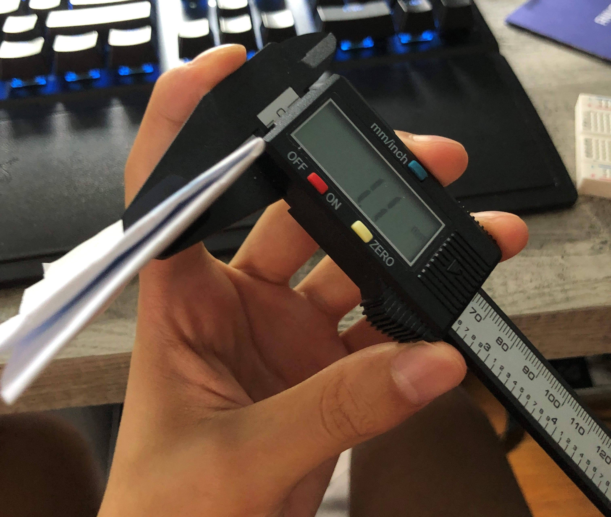
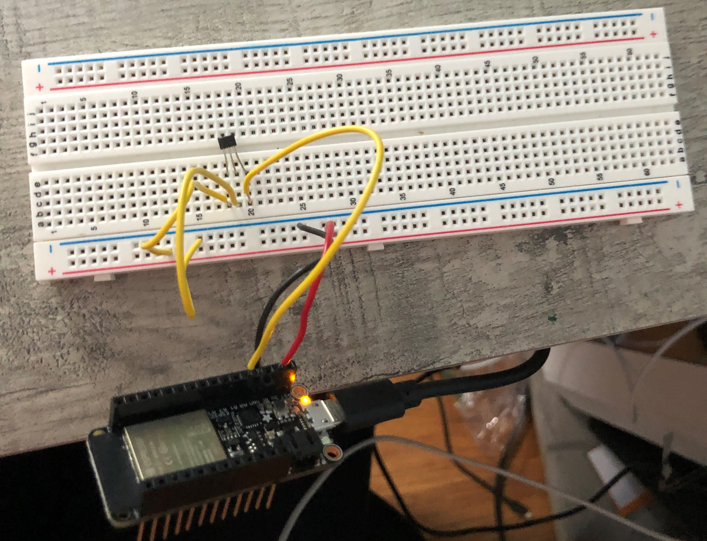
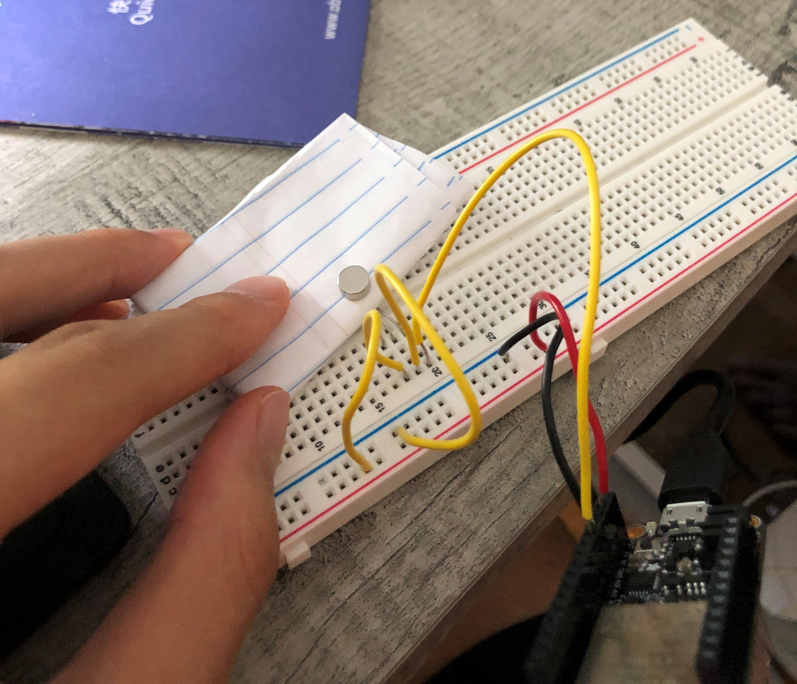
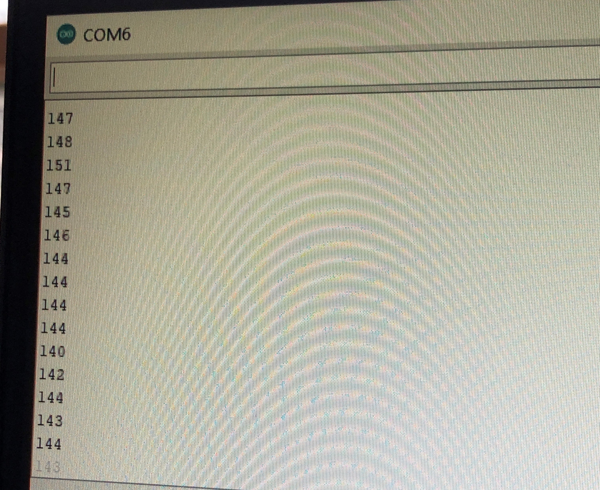
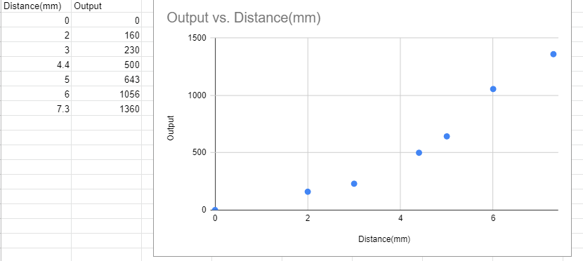
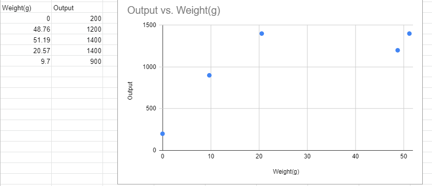

Class 07: Electronic Input Devices

For this class's assignment, I used the hall sensor to sense the magnetic field from a magnet. I just followed the same general set up that was shown in website and at first it didn't seem to be sensing anything, then I just flipped the sensor then it started working. There seemed to be a midpoint where if it sensed nothing it would hover around 1800ish, if you hold it closer on one side it approaches 0 while if you flip it to the other side of the magnet, you can see that it approaches about 4800. Pretty cool stuff. Attached is a chart of somem values and my general set up. I couldn't really find cardboard to stack together, so I just used paper and kept folding it till I got my desired thickness. I used the calipers to measure the thickness. I also found the code to find the values outputted from Andrew's(former student) website.
   Here's some charts
For my own sensor, I just based mine off of the Robert Hart website for the Arduino Capacitrive Sensing Library, where there was the whole touch thing. I basic copied the set up and used the sample code and then played around with it.

I thought of what to do with it in the one hour I have left before class and I just went with something simple, I just tried to see how the output value would change in relationship with the weight of an object. I went around my room looking for small objects and weighted them with my scale then placed them on the copper plate as shown above. The value for the most part would change but it didn't seem to have a super strong relationship and it seemed like it also mattered how spread of not spread it was, in other words, its concentration. Yet again, this may not have to really do with force or weight all that much because I think it is just by it being a ground so I guess its the most effective ground, but more force does seem to work better. Once again, if it is too spread out it doesn't give as high of an output value.
